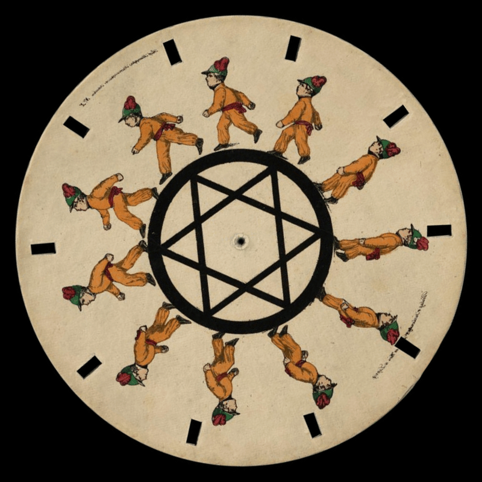
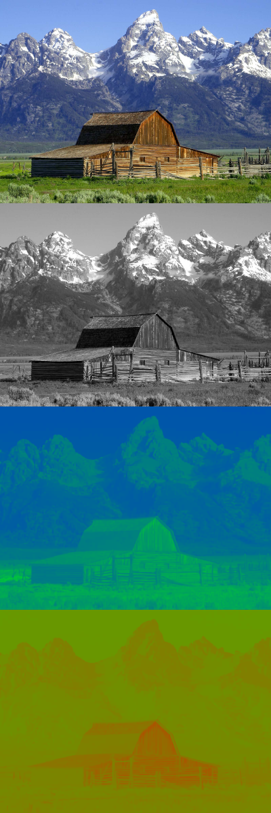
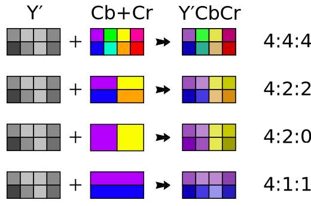

class: center, middle # All About Video --- # Video As An Automated Flipbook <div style="display: flex; gap: 20px"> <div style="max-width: 50%">  </div> <div style="max-width: 50%"> </div> </div> <!-- https://en.wikipedia.org/wiki/Phenakistiscope --> --- # Persistence Of Vision <img src="refs/Sparklers.jpg" style="width: 80%" /> <!-- https://en.wikipedia.org/wiki/Persistence_of_vision --> --- # Cameras Have No Persistence <div style="display: flex; gap: 20px"> <div style="max-width: 50%"> <video src="refs/plane.mp4" autoplay loop /> </div> <div style="max-width: 60%"> <video src="refs/plane2.mp4" style="width: 100%" autoplay loop /> </div> </div> <!-- https://www.reddit.com/r/aviation/comments/ys8p7a/when_shutter_speed_matches_propellers/ --> <!-- https://www.youtube.com/watch?v=dNVtMmLlnoE --> --- # Cathode Ray Tube Displays <div style="display: flex; gap: 20px"> <div style="max-width: 50%"> <img src="refs/crt-monitor.jpeg" style="width: 100%" /> </div> <div style="max-width: 60%"> <img src="refs/crt-back.jpeg" style="width: 100%" /> </div> </div> <!-- https://en.wikipedia.org/wiki/Cathode-ray_tube --> --- # Cathode Ray Tube Displays .left-column[ ### Analog Signal ] .right-column[ ] <!-- https://en.wikipedia.org/wiki/Cathode-ray_tube --> --- # Cathode Ray Tube Displays .left-column[ ### Analog Signal ### Luminance ] <img src="refs/gamecube-greyscale.webp" style="width: 70%" /> <!-- https://www.reddit.com/r/crtgaming/comments/1dswrso/gamecube_showing_black_and_white_on_crt/#lightbox --> --- # Cathode Ray Tube Displays .left-column[ ### Analog Signal ### Luminance ### Persistance ] .right-column[ <video src="refs/crt-slowmo-1.mp4" style="width: 100%" autoplay loop /> ] <!-- https://www.youtube.com/watch?v=3BJU2drrtCM --> --- # Cathode Ray Tube Displays .left-column[ ### Analog Signal ### Luminance ### Persistance ] .right-column[ <video src="refs/crt-slowmo-3.mp4" style="width: 100%" autoplay loop /> ] <!-- https://www.youtube.com/watch?v=3BJU2drrtCM --> --- class: center, middle # Adding Color --- # Why Not RGB? * Bandwidth * Predefiend Channel Sizes * 6-8 Mhz per channel * Backward Compatibility * Over-The-Air TV sets * Existing Black and White TV support --- # YUV Color Space .left-column[ ### Components ] .right-column[  ] <!-- https://en.wikipedia.org/wiki/Y%E2%80%B2UV --> --- # YUV Color Space .left-column[ ### Components ### Bandwidth ] .right-column[ ] <!-- https://www.retrosix.wiki/composite-cvbs --> --- # Video Signal .left-column[ ### Radio Waves ] .right-column[ ] <!-- https://en.wikipedia.org/wiki/Terrestrial_television --> --- # Video Signal .left-column[ ### Radio Waves ### Composite Video ] .right-column[ ] <!-- https://en.wikipedia.org/wiki/Composite_video --> --- # Video Signal .left-column[ ### Radio Waves ### Composite Video ### Component Video ] .right-column[ ] <!-- https://en.wikipedia.org/wiki/Component_video --> --- # Video Signal .left-column[ ### Radio Waves ### Composite Video ### Component Video ### VGA ] .right-column[ ] <!-- https://en.wikipedia.org/wiki/Video_Graphics_Array --> --- # Video Signal .left-column[ ### Radio Waves ### Composite Video ### Component Video ### VGA ### HDMI ] .right-column[ ] <!-- https://en.wikipedia.org/wiki/HDMI --> --- # GIFs .left-column[ <img src="refs/rotating-earth.gif" style="width: 100%" /> ] .right-column[ * Uses palettes for pixels * 256 defined color per "image" * 8 bits per pixel * Gzipped compressed bitstream * Allows for an infinite number of frames * Can start displaying before all frames have been downloaded ] <!-- https://en.wikipedia.org/wiki/GIF --> --- # Video Codecs * H262 (MPEG-2) * 1996 * H264 (AVC) * 2004 * VP8 * 2008 * H265 (HEVC) * 2013 * VP9 * 2013 * AV1 * 2018 --- class: center, middle # Single Frame Compression --- # Single-Frame Compression .left-column[ ### Chroma Subsampling ] .right-column[  ] <!-- https://en.wikipedia.org/wiki/Chroma_subsampling --> --- # Single-Frame Compression .left-column[ ### Chroma Subsampling ] .right-column[ ] <!-- https://en.wikipedia.org/wiki/Chroma_subsampling --> --- # Single-Frame Compression .left-column[ ### Chroma Subsampling ### Macroblocks ] .right-column[ ] <!-- https://shopdelta.eu/h-265-video-coding-standard_l2_aid860.html --> --- # Single-Frame Compression .left-column[ ### Chroma Subsampling ### Macroblocks ### Spatial Redundancy ] .right-column[ <div class="grid-conversion"> <table> <tr><td>240</td><td>242</td><td>243</td><td>243</td></tr> <tr><td>240</td><td>241</td><td>243</td><td>243</td></tr> <tr><td>240</td><td>242</td><td>243</td><td>243</td></tr> <tr><td>240</td><td>241</td><td>243</td><td>243</td></tr> </table> <div class="arrow">→</div> <table> <tr><td>0</td><td>1</td><td>3</td><td>3</td></tr> <tr><td>0</td><td>2</td><td>3</td><td>3</td></tr> <tr><td>0</td><td>1</td><td>3</td><td>3</td></tr> <tr><td>0</td><td>2</td><td>3</td><td>3</td></tr> </table> </div> ] --- # Single-Frame Compression .left-column[ ### Chroma Subsampling ### Macroblocks ### Spatial Redundancy ### Frequency Of Detail ] .right-column[ ] <!-- https://sidbala.com/h-264-is-magic/ --> --- # Single-Frame Compression .left-column[ ### Chroma Subsampling ### Macroblocks ### Spatial Redundancy ### Frequency Of Detail ### Quantization ] .right-column[ <div class="grid-conversion"> <table> <tr><td>240</td><td>123</td><td>42</td><td>4</td></tr> <tr><td>239</td><td>51</td><td>12</td><td>3</td></tr> <tr><td>81</td><td>13</td><td>3</td><td>0</td></tr> <tr><td>46</td><td>1</td><td>1</td><td>0</td></tr> </table> <div class="arrow">→</div> <table> <tr><td>60</td><td>30</td><td>10</td><td>1</td></tr> <tr><td>59</td><td>12</td><td>3</td><td>0</td></tr> <tr><td>20</td><td>3</td><td>0</td><td>0</td></tr> <tr><td>11</td><td>0</td><td>0</td><td>0</td></tr> </table> </div> <br/> <div class="grid-conversion"> <table> <tr><td>60</td><td>30</td><td>10</td><td>1</td></tr> <tr><td>59</td><td>12</td><td>3</td><td>0</td></tr> <tr><td>20</td><td>3</td><td>0</td><td>0</td></tr> <tr><td>11</td><td>0</td><td>0</td><td>0</td></tr> </table> <div class="arrow">→</div> <table> <tr><td>240</td><td>120</td><td>40</td><td>4</td></tr> <tr><td>236</td><td>48</td><td>12</td><td>0</td></tr> <tr><td>81</td><td>12</td><td>0</td><td>0</td></tr> <tr><td>44</td><td>0</td><td>0</td><td>0</td></tr> </table> </div> ] --- # Frame Types <img src="refs/frame_types.svg" /> * I-Frames * Intra-coded picture * Also known as Key Frames * Contain a complete picture * Largest size frame type * P-Frames * Predicted picture * Contains only changes from the previous frame * B-Frames * Bidirectional predicted picture * Only differences between the current and a number of other frames --- # Multi-Frame Compression <!-- https://trac.ffmpeg.org/wiki/Debug/MacroblocksAndMotionVectors --> --- # Codecs Aren't Enough * Codecs don't contain * Decoding or presentation timings * Codec Identification * Frame Locations --- # Container Formats * MP4 * TS * FLV * RTP --- # Live Streaming .left-column[ ### RTMP ] .right-column[ * Created by Adobe * Specification released 2012 * Low latency when a good connection is present * TCP based protocol based on FLV container * Connection hiccups can cause backlogs ]